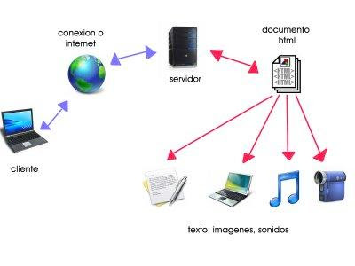
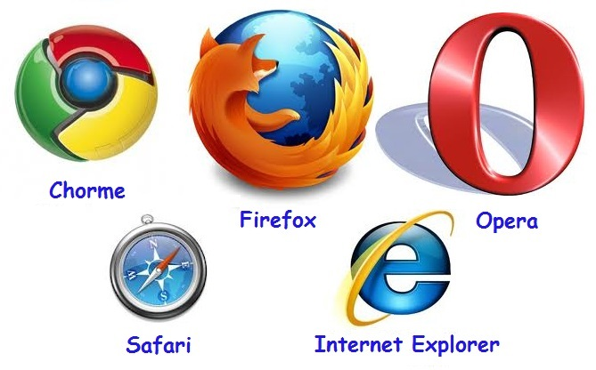
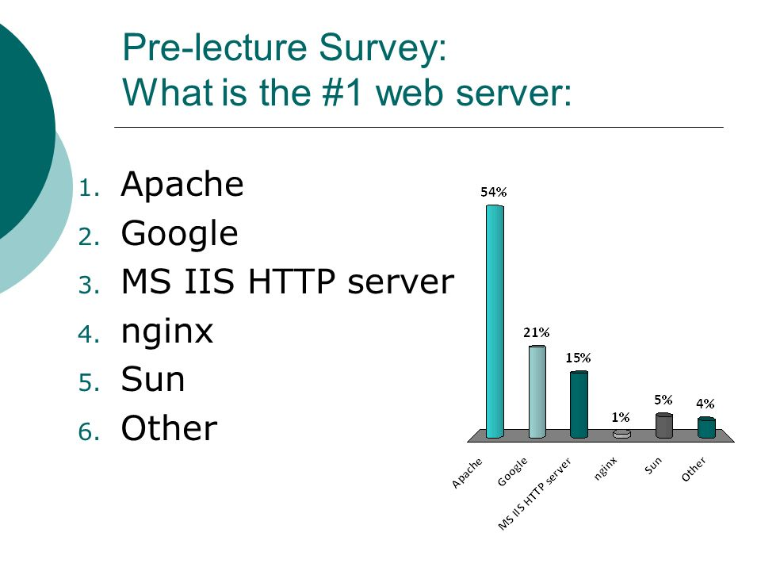
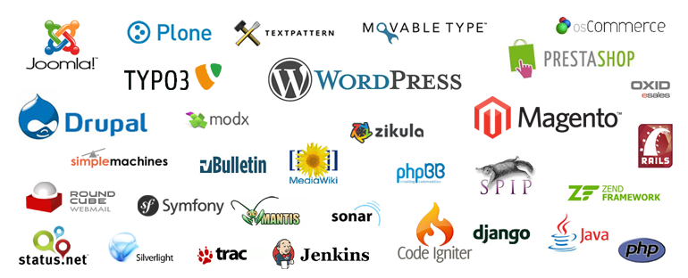
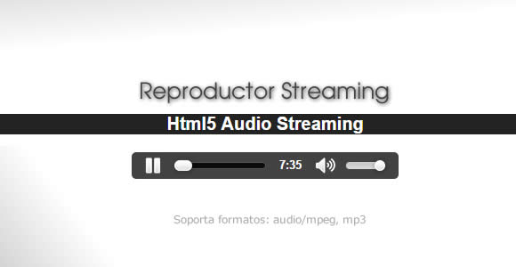
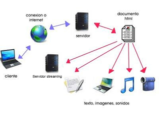

La Radio online, tendencias en la construcción web para la radio
Dominio web, hosting y servicio de streaming
Opciones y presupuesto para montar una radio digital web
por: Rolando Monzón
Dominio web, hosting y servicio de streaming
La arquitectura de un sitio web
- Cliente usa un navegador web
- Se conecta a un servidor web
- Carga una páginas web
Dominio web, hosting y servicio de streaming
La arquitectura de un sitio web
Dominio web, hosting y servicio de streaming
Navegadores web
Dominio web, hosting y servicio de streaming
Servidores web
Almacenar los archivos de un sitio y emitirlos por Internet
Dominio web, hosting y servicio de streaming
Software para servidores web
Dominio web, hosting y servicio de streaming
tipos de servidores web

Dominio web, hosting y servicio de streaming
Páginas web
Conjunto de archivos en formato html, css, js, php, war, etc.
Se descargan en el navegador web del cliente, y este los dibuja
Dominio web, hosting y servicio de streaming
Creadores de páginas web
Dominio web, hosting y servicio de streaming
Páginas web

Dominio web, hosting y servicio de streaming
¿Cómo añado un reproductor de radio?
Dominio web, hosting y servicio de streaming
¿Cómo añado un reproductor de radio?
Dominio web, hosting y servicio de streaming
¿Cómo añado un reproductor de radio?
Dominio web, hosting y servicio de streaming
¿Cómo añado un reproductor de radio?
Un servidor streaming nos proporciona un punto de entrada y otro de salida para la difusión de audio
Dominio web, hosting y servicio de streaming
¿Preguntas?
Continuamos...
Dominio web, hosting y servicio de streaming
¿Como se accede a un servidor web?
Dominio web, hosting y servicio de streaming
¿Como se accede a un servidor web?
A traves de una IP, que es un identificador único dentro de una red
Ejemplo: 8.8.8.8
Dominio web, hosting y servicio de streaming
DOMINIO
Dominio web, hosting y servicio de streaming
DOMINIO
Es un nombre único o alias para una IP
Ejemplo: google.com es 8.8.8.8
Dominio web, hosting y servicio de streaming
Empresas que venden dominios
- Nic.bo
- Godaddy
- Nodored
- muchos más...
Dominio web, hosting y servicio de streaming
Empresas que venden hospedaje en servidores web
- Godaddy
- Nodored
- bluehost
- hostgator
- muchos más...
Dominio web, hosting y servicio de streaming
Empresas que venden servidores para streaming
- inovanex.com
- myradiostream.com
- usastreams.com
- listen2myradio.com
- propia instalación
- muchos más...
Opciones y presupuesto para montar una radio digital web
- Servicios por separado
- Todos los servicios con un proveedor
Opciones y presupuesto para montar una radio digital web
Servicios separados
Hosting y Dominios
| Godaddy | Bluehost | Siteground | iPage | nodored | |
| NOMBRE DEL PLAN | Económico | Básico | StartUp | Único | Básico |
| PRECIO | 12$us | 65.40$us | 47.40$us | 35.88$us | 20$us |
| SITIOS WEB | 1 | 1 | 1 | Ilimitado | 1 |
| DISCO DURO | 100GB | 50GB | 10GB | Ilimitado | 2GB |
| DOMINIO | Gratis | Gratis | 15.95$us | Gratis | 12.99$us |
Opciones y presupuesto para montar una radio digital web
Servicios separados
Servicios de Streaming
| profesionalhosting | myradiostream | listen2myradio | |
| NOMBRE DEL PLAN | Radio experto | Webcaster Plus | Radio Streaming Premium |
| PRECIO | 360.93$us | 57.60$us | 180$us |
| Calidad | 128Kbps/32kbps(movil) | 192kbps | No especifica |
| TECNOLOGÍA | Shoutcast / Icecast | Shoutcast | Shoutcast |
Opciones y presupuesto para montar una radio digital web
Servicios con un proveedor
Proveedores VPS
(Se pueden instalar softwares al igual que los dedicados)
| bluehost | hostgator | InMotion | Digital Ocean | |
| NOMBRE DEL PLAN | Standard | Snappy 2000 | VPS-1000HA-S | Standard Droplets 4GB |
| PRECIO | 240$us | 240$us | 240$us | 240$us |
| NUCLEOS DEL CPU | 2 | 2 | No indica | 2 |
| ALMACENAMIENTO | 30 GB | 120 GB | 75 GB | 80 GB |
| RAM | 2 GB | 2 GB | 4 GB | 4 GB |
| Nro IPs | 1 | 2 | 3 | no indica |
Software usados en la presentación
Transmisión por facebook
Transmisión con el servidor myradiostream
¿Preguntas?
Gracías
www.rho1and0.net o www.rho.technology
www.facebook.com/rho1and0
www.twitter.com/rho1and0